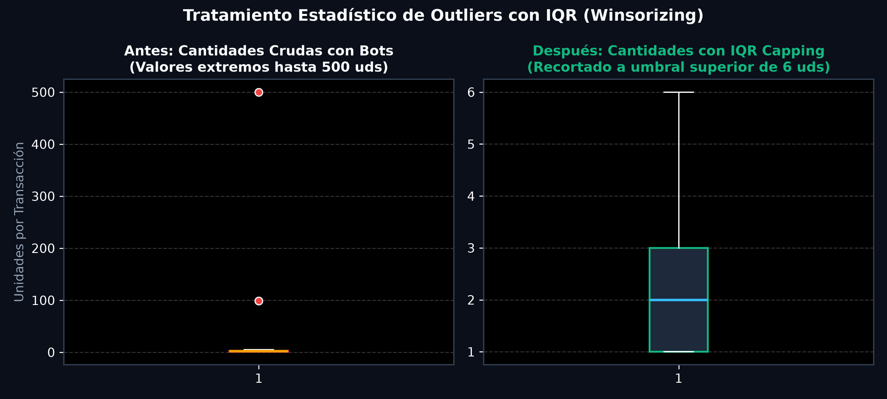
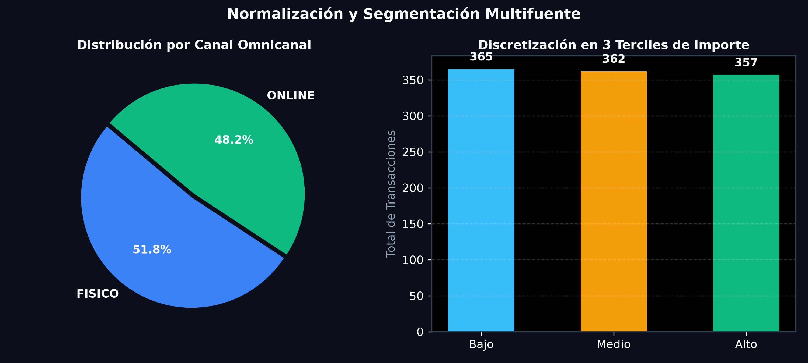
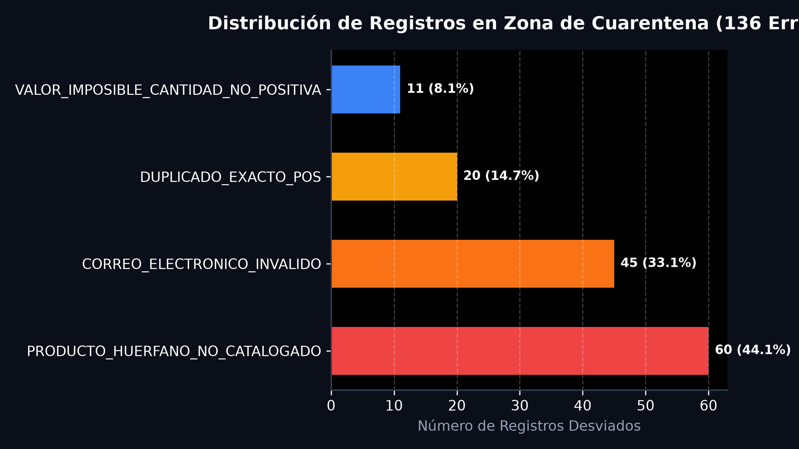

PIPELINE ETL ROBUSTO CON ZONA DE CUARENTENA
Arquitectura industrial en Python que ingiere datos crudos heterogéneos de retail omnicanal, diagnostica calidad, aplica imputación y Winsorizing IQR, valida con Pydantic v2 y persiste en SQLite relacional, desviando anomalías sin detener el procesamiento (Principio No Crash).
Matriz de Responsabilidades Técnicas (3 Integrantes)
Distribución formal de roles de ingeniería de datos para la defensa técnica del proyecto.
Calidad, Nulos y Outliers
Responsable del diagnóstico cuantitativo inicial, clasificación teórica de ausencias y estabilización de varianza.
- Perfilado inicial cuantitativo (completitud, unicidad y dtypes).
- Clasificación MCAR vs MAR e imputación justificada con mediana.
- Detección de outliers (IQR factor 1.5) y aplicación de Capping / Winsorizing.
Transformación e Integración
Responsable de la fusión de fuentes heterogéneas, estandarización de variables y enriquecimiento con catálogo.
- Fusión multifuente (CSV tienda física + JSON e-commerce).
- Unificación de fechas ISO YYYY-MM-DD y conversión USD a MXN ($19.50).
- Cruce con catálogo maestro, detección de huérfanos y Min-Max [0, 1].
Validación, Resiliencia y BD
Responsable de los contratos de datos con Pydantic, transaccionalidad relacional y pruebas de estrés.
- Modelado de clases BaseModel con Pydantic y @field_validator.
- Mecanismo de segregación con causa auditable hacia Zona de Cuarentena.
- Persistencia ACID en SQLite (commit / rollback) y pruebas de inyección hostil.
Arquitectura End-to-End con Zona de Cuarentena
Las 7 Fases obligatorias del pipeline y la compuerta de tolerancia a fallos en producción.
Diagnóstico de Calidad Inicial
Perfilado cuantitativo crudo: 127 nulos en cliente, 32 en totales, 20 duplicados de POS y 48 anomalías de correo.
Manejo de Faltantes e Imputación
Clasificación MCAR/MAR. Imputación de 'ANONIMO' y recálculo determinista: monto = cantidad * precio.
Tratamiento Outliers IQR (Capping)
IQR = 2.0. Umbral Q3 + 1.5*IQR = 6 uds. Winsorizing de 13 compras gigantes de bots sin pérdida de registros.
Integración, Fechas y Huérfanos
Fechas ISO YYYY-MM-DD, conversión USD a MXN ($19.50) y cruce con catálogo. 60 llaves huérfanas derivadas a cuarentena.
Escalamiento y Discretización
Normalización Min-Max [0, 1] y discretización en 3 terciles de negocio: Bajo, Medio y Alto.
Compuerta Pydantic & Cuarentena
Validación estricta con decoradores @field_validator. Intercepción de ValidationError con trazabilidad.
Persistencia Relacional SQLite
Carga transaccional ACID con commit() y rollback() en transacciones_limpias y cuarentena_errores.
Laboratorio Comparativo de Calidad (Antes vs Después)
Evidencia empírica y visual del preprocesamiento estadístico aplicado.
Detección y Capping de Outliers con IQR
Winsorizing
Justificación: Los bots con compras de 99 y 500 unidades distorsionaban la varianza. Con el umbral superior de 6 unidades ($Q_3 + 1.5 \times \text{IQR}$), se estabiliza la distribución conservando el registro histórico.
Segmentación Omnicanal y Terciles
Min-Max [0, 1]
Distribución: Integración de 562 ventas físicas (51.8%) y 522 online (48.2%), con discretización en terciles estadísticos perfectamente balanceados.
Auditoría de Causas en Zona de Cuarentena (136 Registros)
100% Auditable
Desglose: 60 productos huérfanos (violación de integridad referencial), 45 correos inválidos/nulos en web, 20 duplicados exactos de POS y 11 valores imposibles ($\le 0$).
Explorador Interactivo de Tablas en SQLite
Visualice y filtre las tablas transacciones_limpias y cuarentena_errores persistidas en retail_omnicanal.db.
| ID Transacción | Fecha | Canal | Producto | Categoría | Cant. | Precio MXN | Monto Total | Segmento | Método Pago |
|---|
| ID Origen | Fuente | Motivo de Rechazo en Cuarentena | Campo Erróneo | Valor Inválido | Inspección JSON |
|---|
| ID Producto | Nombre Producto | Categoría | Precio Base MXN | Stock Mínimo | Proveedor |
|---|
Consola de Inyección de Fallos y Tolerancia Hostil
Demostración en vivo de resiliencia: ataque SQL, XSS en correos, fechas corruptas y fallos de rollback.
Simulador de Defensa Oral y Preguntas del Docente
Respuestas técnicas y fundamentos teóricos clave estructurados por cada rol de ingeniería.
¿Por qué imputaron los faltantes con la mediana y no con la media aritmética?
¿Cómo trataron los productos que no existían en el catálogo maestro?
PROD-9xx y PROD-8xx no catalogados fueron aisladas y derivadas a la tabla cuarentena_errores con la causa PRODUCTO_HUERFANO_NO_CATALOGADO, evitando registros huérfanos sin colapsar el pipeline.
¿Qué ocurre si un registro inyecta SQL malicioso o un formato corrupto?
try ... except ValidationError captura cualquier violación del esquema Pydantic antes de tocar la base de datos. Además, la persistencia utiliza sentencias parametrizadas y transacciones atómicas con conn.rollback() ante cualquier anomalía.